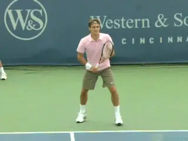
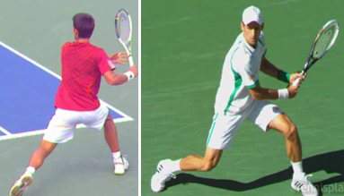
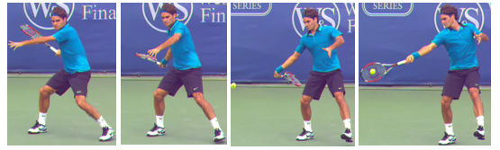
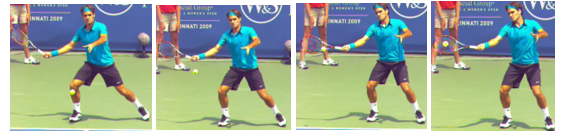
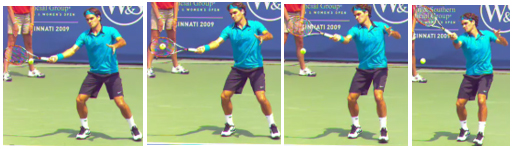

Previous: Return of Serve - The First 3 Principles | 🏠 Classic Lessons Home | Next: Rhythm and Rally Speed
Return of serve the return swing
Comprehensive unified tennis knowledge base — Fundamentals, Stroke Analysis, Reference Library, and more
Return of Serve:The Return Swing
Bill Tym
In the first two articles in this series we looked at six components in developing a great return. In the first article we looked at consistency combined with accuracy, the position of the racquet head, and watching the ball properly. (Click Here.)
In the second article we examined flexibility, shot selection and the split step (Click Here.) Now let's look at the actual path of the racket, including both the backswing and the forward swing.

What are the swing characteristics on the return?
Rotate and Bend
I use the phrase "Rotation and a Bend" to describe the return backswing. As you come down from the split-step and read the direction of the serve you rotate your upper body on both the forehand and on the backhand.
That rotation takes the racket back to approximately the unit turn position. That is all the backswing you need to return a serve hit with good speed--assuming your return position is not far back.
You want to simplify things so you can meet the ball using its pace. When you rotate the upper body, the outside foot—the right foot on a right-handed forehand—will often act as hinge and rotate to the outside. The exact amount of rotation will vary among players and the type of serve being returned.
At the same time you rotate the upper body, you should also emphasize bending the knee of the inside leg--the left leg on a right-handed forehand. This keeps the body in an athletic position and enables you to effectively push off the ground and explosively lunge out to intercept the return if needed.

Novak Djokovic showing the rotate and bend principle on his forehand and backhand return.
Racket on Edge
The "modern" forehand groundstroke involves the so-called stretch shorten cycle of the wrist/forearm--the so-called flip--combined with a closed off racket face at the bottom of the backswing. All with the goal of providing more power/explosiveness.
The return of a fast-paced serve is a different stroke. A big serve puts you in an unstable position and you want to do everything you can to simplify the situation and just make solid contact with the return.
So you want to keep the racket much more on edge--assuming you are hitting a drive return as opposed to a chip. This means you want to eliminate the stretch shorten cycle as that complicates the timing.
The on-edge principal also applies to the backhand return--whether a one or two handed backhand return.

Compare the Federer forehand groundstroke.

To the Federer forehand return.
Notice how much simpler Federer's approach is on the forehand return in contrast to his normal forehand groundstroke. The racket face on the return is essentially on edge from the end of the backswing through the forward swing. There is no stretch shorten cycle with the wrist/forearm.

Roger Federer demonstrates the principle of keeping the forward swing a basic straight through approach with just a moderate amount of lift to the racket.
Simple Forward Swing
Simplicity applies on the forward swing as well. The emphasis should be on a swing straight through the ball. There will be a little natural topspin imparted as you center of gravity lifts up as you hit the shot, thus making the path of the racket go upwards. But you are basically looking for a simple straight through the ball approach.
So the first three articles have covered nine basic principles of the return. In upcoming articles we’ll move on to technical--and other--variations and then turn to return strategy. Stay Tuned!

Bill Tym, a USPTA Master Professional and past USPTA national president, has been involved in tennis as a coach, player and administrator for half a century. He coached the Vanderbilt University men's tennis team to its first NCAA tournament. As a player, Tym was a Southeastern Conference singles champion at the University of Florida. He also competed on the international tour and won 10 national and international titles.
As executive director of USPTA, Tym helped create a standardized certification test. Tym was named USPTA Professional of the Year in 1982, College Coach of the Year in 1989, and Touring Coach of the Year in 1997 and 2002. He also received the George Bacso Lifetime Achievement Award from the USPTA in 2001 and the International Tennis Hall of Fame Tennis Educational Merit Award in 1981.
Bill wishes to acknowledge Tennisplayer founding investor Ed Weiss’s help in preparing this article.
Source: tennisplayer.net archive — Return of Serve - The Return Swing.docx (John Yandell teaching library, 2002-2022). Extracted and rendered as HTML for Tennis Future Lab.